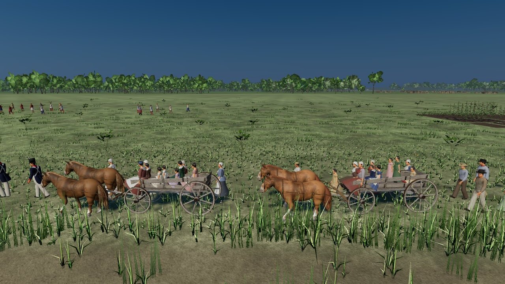
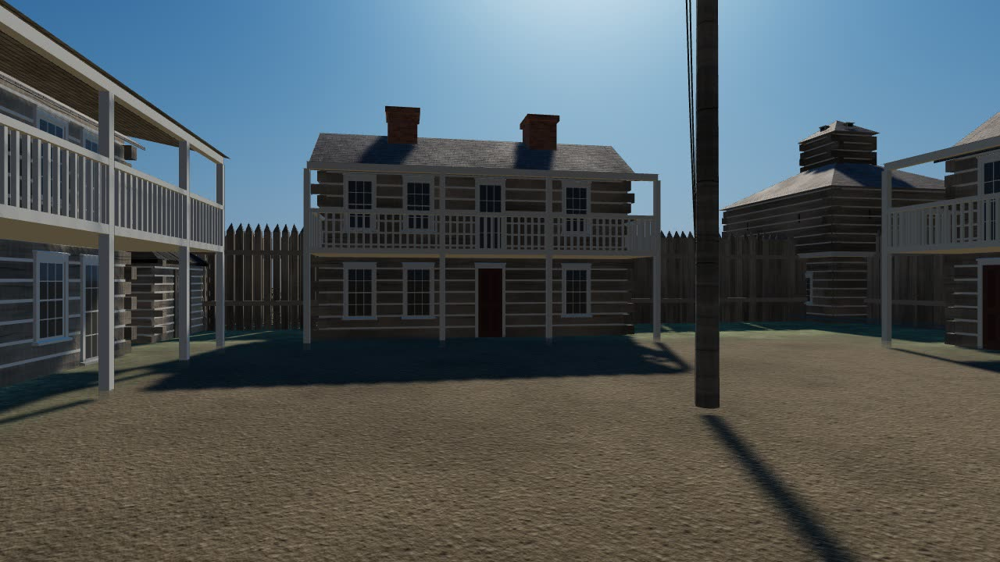

The Last Pullman Twin
George Pullman left his twin sons a name they could not live up to. At dusk in 1904 the one still living is riding hard.

A jaunt takes you stop by stop through a place or a story. The narrator reads each stop aloud, the people of the town step out to tell their part, and the hour and the season change to match the moment.

1812 · 15 Aug · 09:00The Battle of Fort Dearborn and Chicago's First Murder are staged with the people who were there. Kinzie and Lalime argue at the gate, the order to leave is read on the parade, and the column marches down the shore past you. Every castmate is someone you can click, with their own card and sources.

1812 · 10 Aug · paradeJaunts are narrated in recorded voices. Choose between two narrators in Settings, and on the Glessner tours each member of the household speaks in a voice of their own, mouth moving as they talk. The narrator opens with the jaunt's story, then hands over to the hosts.
Scandal, fortune, loss and invention on Prairie Avenue, each told at the houses where it happened, by the people who lived there.
George Pullman left his twin sons a name they could not live up to. At dusk in 1904 the one still living is riding hard.
A German sergeant swore George Pullman was his father, and followed the family for four years, to the front steps.
Pullman set up a bronze of the battle of 1812 at his door. A year later the army came to Chicago for his own workers.
Three days after Arthur Caton died, the street is whispering about his widow and the richest man in Chicago.
Marshall Field Jr. has a wife, three children and the biggest fortune in Chicago coming to him. One November afternoon changes it.
Frances Glessner Lee's hands want something more than a fine new house. Years later she will build the Nutshell Studies.
Every Monday the ladies of Chicago come to Glessner House to sew and listen to a reading.
A carriage-maker's showplace becomes the most talked-about house on the block.
A widow at 1906 Prairie retraces the walk her husband took one morning and never came back from.
Three blocks west of the mansions, two sisters from Virginia run the most famous club in the city. The avenue pretends not to know.
Each jaunt is measured for reading level and tagged with a grade band. The Jaunts menu in the app filters the same way.
An autumn afternoon with the architects who rebuilt Chicago: Jenney, Richardson, Cobb & Frost, Burnham & Root, Beman and Hunt, ending where Burnham met his wife.
7 stopsRound-headed windows, bracketed cornices and high stoops: five Italianate houses from 1612 to 2031 Prairie, among the street's older fronts.
5 stopsRough-faced stone, deep round arches, turrets: four Romanesque fronts from Eighteenth Street to Twenty-first.
4 stopsMansard roofs with dormers: six Second Empire houses from 1620 to 2115 Prairie, the street's most popular style.
6 stopsWalk every building on Prairie Avenue modelled in detail so far, most detailed first, kept area by area. It grows as buildings are built out.
50 stopsA summer dusk on Millionaire's Row: Pullman, Glessner, Kimball, the two Marshall Fields and Armour, and how each made a fortune in one lifetime.
6 stopsMeet the Glessners and the people who worked in their house on a spring morning in 1904, told for grades 3 to 5.
7 stopsSpend a spring morning in 1904 round 1800 Prairie Avenue with the people who live and work there: the Glessners, their cook and maids, the stable boy, and the old…
7 stopsA spring morning walk past six houses tied to women who changed Chicago: nursing, forensic science, a forty-year journal, suffrage, a famous fountain and the…
6 stopsWalk all the way round Richardson's last house in summer 1904, from the street that stared at it to the sunny courtyard it hid, in ten stops on foot.
10 stopsA night walk down Millionaire's Row: a battlefield underfoot, a tycoon in concrete, a rattling widow, a drowned brother and the gunshot at 1919.
7 stopsEvery Monday from October to May the ladies of Chicago come to the stone fortress at Eighteenth and Prairie to sew and listen. This Monday the house across the…
5 stopsMarshall Field Jr. has a wife, three children, a new wing on his house and the biggest fortune in Chicago coming to him. On this November afternoon he has one year…
4 stopsA German sergeant swore George Pullman was his father. He followed the family for four years, to the office, to the funeral, to the front steps, and once to the…
4 stopsGeorge Pullman set up a bronze of the battle of 1812 at his own door. A year later the army came to Chicago again, this time for his own workers. A walk about…
4 stopsAt 26, Frances Glessner Lee has a lawyer husband, two children and a fine new house her parents built. Her hands want something else, and a block south her mother…
4 stopsGeorge Pullman left his twin sons $3,000 a year and a name they could not live up to. One is dead. At dusk in 1904 the other is still riding hard, and his mother is…
4 stopsThree days after Arthur Caton died in a New York hotel, the whole street is whispering about his widow Delia and the richest man in Chicago, whose house stands just…
4 stopsA carriage-maker's showplace has become the most talked-about house on the block: a society divorce, a judge's order, a violin in a broken automobile, and a small…
4 stopsThree blocks west of the mansions, two sisters from Virginia run the most famous house in Chicago, with gold cuspidors and a $15,000 piano. Prairie Avenue pretends…
4 stopsAt daybreak a widow rises at 1906 Prairie, eight years after her husband walked out of this door at six in the morning and never came back. Retrace his last walk,…
4 stopsCompare four of the town's lodging houses from the street and choose where a modest purse should ask first.
4 stopsLook at what two South Water stores advertised to wear, and choose how to go to a call at the Sauganash.
4 stopsWrite an imagined letter home, read the paper's list of uncalled letters and work out where to post it.
4 stopsRide past the places Chicago's first classes met, on both sides of the river, with an invented household's question about school, and finish with a notice in the…
4 stopsTwo rumors are going round the forks. Carry them past the Exchange to the town's two printing offices, read what the papers actually said, and decide what you will…
4 stopsRead a land notice, see the room where lots are cried, find your corner and look at the ground before you pay.
4 stopsRead both of the town's papers before breakfast, tell a report from an advertisement and keep one useful clipping.
4 stopsLeave town with a practical kit, sound equipment and enough money for the road.
5 stopsFill a small household list along the working riverfront without buying everything you see.
4 stopsSee from Wolf Point what Daniel Elston & Co.'s works up the North Branch made, make a short list on South Water Street, choose what to carry, and bring it home to a…
4 stopsStart a cupboard of your own from one block of South Water Street, with a short list and a small purse.
4 stopsMake a few imagined calls: present a letter of introduction from Brown's boarding house, read the Peck household on its card, find where the town meets at the…
4 stopsRide from Wolf Point to the fort past the places of six women a source names in the town of 1835: an author, two hotel and boarding-house keepers, a teacher and the…
7 stopsA quiet outing past the town's two churches and its log meeting house, ending with a call at the Sauganash.
4 stopsMake a short crossing between the settlement's divisions and learn why the forks mattered.
4 stopsFollow freight back to the lake: a forwarding house on the river, the Dearborn Street draw, the light at the mouth, and the two piers still being pushed into the…
4 stopsA quiet circuit of the familiar streets: a shopfront, the corner where the town's newspaper began and two public houses, with nothing to count or carry.
4 stopsCome in off the open shore south of the fort: start at the factor's house below Fort Dearborn, pass its stockade, find a store on South Water Street and finish at a…
4 stopsFind your bearings, a bed and a practical next step on an imagined first day in town.
5 stopsCross the town's first drawbridge into the North Side and see what stood on the far bank: a brickyard, the first house built for a school and a brick hotel going…
4 stopsVisit three taverns, collect local talk and decide where to finish the evening.
4 stopsOutfit a rider for tomorrow's road: boots at Holbrook's on South Water Street, a look across the forks from Wolf Point at Miller's tannery, where the town's leather…
4 stopsCarry a small supply request round the fort's everyday service buildings and out to its shop.
4 stopsCount an invented consignment off Newberry & Dole's wharf, load the wagon, deliver to two stores and carry the tally back to George Dole's warehouse with nothing lost.
4 stopsDraw up a builder's list for one small roof: what comes by lake at Newberry & Dole's, nails or nail rods at Peck's corner, brick or none at the town's first…
4 stopsFind a cracked trace while harnessing behind the Western Hotel, take the leather to the saddler and the iron to the smith at Lake and Canal, and decide at the Green…
4 stopsRead the town's notices for working hands, ask after work at two Newberry & Dole warehouses and leave with a work chit or a sensible next lead.
4 stopsThe last full day of the first Fort Dearborn, 14 August 1812, from daybreak to sunset: every building on Captain Whistler's 1808 draught, while the garrison packs…
12 stops17 June 1812, sunset, the fort gate: Chicago's first recorded murder. The victim, interpreter Jean Lalime. The killer, John Kinzie, 'The Father of Chicago'. Nine stops.
9 stops6 April to 16 August 1812 in thirteen stops: the fort, the killings at Hardscrabble, the order to leave, the march down the beach, the surrender, and the houses…
13 stopsEvery year opens on its arrival menu, where Jaunts lists what that year holds.